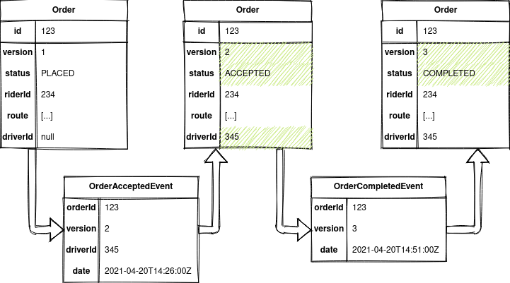
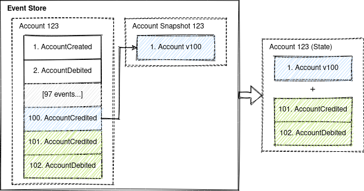

Event Sourcing with PostgreSQL
- Introduction
- Example Domain
- Event Sourcing and CQRS 101
- Requirements for Event Store
- Solution Architecture
- How to Run the Sample?
Introduction
PostgreSQL is the world's most advanced open source database. Also, PostgreSQL is suitable for Event Sourcing.
This repository provides a sample of event sourced system that uses PostgreSQL as event store.
See also
Example Domain
This sample uses heavily simplified ride hailing domain model inspired by tech/uklon experience.
- A rider can place an order for a ride along a route specifying a price.
- A driver can accept and complete an order.
- An order can be cancelled before completion.


Event Sourcing and CQRS 101
State-Oriented Persistence

Event Sourcing
Event sourcing persists the state of an entity as a sequence of immutable state-changing events.

Whenever the state of an entity changes, a new event is appended to the list of events.

Current state of an entity can be restored by replaying all its events.
Event sourcing is best suited for short-living entities with relatively small total number of event (like orders).
Restoring the state of the short-living entity by replaying all its events doesn't have any performance impact. Thus, no optimizations for restoring state are required for short-living entities.
For endlessly stored entities (like users or bank accounts) with thousands of events restoring state by replaying all events is not optimal and snapshotting should be considered.
Snapshotting is an optimization technique where a snapshot of the aggregate's state is also saved, so an application can restore the current state of an aggregate from the snapshot instead of from scratch.

An entity in event sourcing is also referenced as an aggregate.
A sequence of events for the same aggregate are also referenced as a stream.
CQRS
CQRS (Command-query responsibility segregation) stands for segregating the responsibility between commands (write requests) and queries (read requests). The write requests and the read requests are processed by different handlers.
A command generates zero or more events or results in an error.

CQRS is a self-sufficient architectural pattern and doesn't require event sourcing.
Event sourcing is usually used in conjunction with CQRS. Event store is used as a write database and SQL or NoSQL database as a read database.

Events in event sourcing are a part of a bounded context and should not be used "as-is" for integration with other bounded contexts. Integration events representing the current state of an aggregate should be used for communication between bounded contexts instead of a raw event sourcing change events.
Advantages of CQRS
- Independent scaling of the read and write databases.
- Optimized data schema for the read database (e.g. the read databases can be denormalized).
- Simpler queries (e.g. complex
JOINoperations can be avoided).
Advantages of Event Sourcing
- Having a true history of the system (audit and traceability).
- Ability to put the system in any prior state (e.g. for debugging).
- Read-side projections can be created as needed (later) from events. It allows responding to future needs and new requirements.
Requirements for Event Store
- Permanent storage. Store events forever.
- Optimistic concurrency control. Prevent lost update anomaly (write-write conflicts).
- Loading current state. Loading all previous events for the particular aggregate ID from an event store.
- Subscribe to all events by aggregate type. Instead of subscribing to a single event stream that represents an aggregate.
- Checkpoints. Store the event offset (a position in the stream) after handling it. Subscribe from the last known position instead of the stream start after the application restart.
Solution Architecture
PostgreSQL can be used as an event store. It will natively support appending events, concurrency control and reading events. Subscribing on events requires additional implementation.
Separate table ORDER_AGGREGATE keeps track of the latest versions of the aggregates. It is
required for optimistic concurrency control.
PostgreSQL doesn't allow subscribing on changes, so the solution is Transactional outbox pattern. A service that uses a database inserts events into an outbox table as part of the local transaction. A separate Message Relay process publishes the events inserted into database to a message broker.
With event sourcing database model classical Transaction outbox pattern can be simplified even more. An outbox table is used to keep track of handled events. Outbox handler (aka Message Relay and Polling Publisher) processes new events by polling the database's outbox table.

Event processing includes updating the read model and publishing integration events.
All parts together look like this
Permanent Storage
PostgreSQL stores all data permanently be default.
Optimistic concurrency control
Optimistic concurrency control is done by checking aggregate versions in the ORDER_AGGREGATE
table.
Appending an event operation consists of 2 SQL statements in a single transaction:
- Check the actual and expected version match and increment version
UPDATE ORDER_AGGREGATE SET VERSION = VERSION + 1 WHERE ID = ? AND VERSION = ? - Insert new event
INSERT INTO ORDER_EVENT(AGGREGATE_ID, VERSION, EVENT_TYPE, JSON_DATA) VALUES(?, ?, ?, ?)
Loading current state
Current state of an aggregate can be loaded using simple query that fetches all aggregate events order by version in the ascending order
SELECT ID, EVENT_TYPE, JSON_DATA FROM ORDER_EVENT WHERE AGGREGATE_ID = ? ORDER BY VERSION ASC
Subscribe to all events by aggregate type
PostgreSQL doesn't allow subscribing on changes, so the solution is Transactional outbox pattern or its variations.
ORDER_EVENT_OUTBOX table keeps track of all subscribers (consumer groups) and the last processed
event ID.
The concept of consumer groups is required to deliver events to only one consumer from the group.
This is achieved by acquiring a locking on the same record of ORDER_EVENT_OUTBOX table.
Outbox handler polls ORDER_EVENT_OUTBOX table every second for new events and processes them
- Read the last processed event ID and acquire lock
SELECT LAST_ID FROM ORDER_EVENT_OUTBOX WHERE SUBSCRIPTION_GROUP = ? FOR UPDATE NOWAIT - Fetch new events
SELECT ID, EVENT_TYPE, JSON_DATA FROM ORDER_EVENT WHERE ID > ? ORDER BY ID ASC - Update the ID of the last event processed by the subscription
UPDATE ORDER_EVENT_OUTBOX SET LAST_ID = ? WHERE SUBSCRIPTION_GROUP = ?
Checkpoints
The last known position from where the subscription starts getting events is stored in LAST_ID
column of ORDER_EVENT_OUTBOX table.
Drawbacks
- The asynchronous replication leads to the eventual consistency between the write and read models. But polling database's outbox table for new messages with a fixed delay introduces pretty big full consistency lag (greater than or equal to the fixed delay between polls).
- The Outbox handler might process an event more than once. It might crash after processing an event but before recording the fact that it has done so. When it restarts, it will then process the same event again (update the read model and send an integration event).
Integration events are delivered with at-least-once delivery guarantee. The exactly-once delivery guarantee is hard to achieve due to a dual-write. A dual-write describes a situation when you need to atomically update the database and publish messages and two-phase commit (2PC) is not an option.
Consumers of integration events should be idempotent and filter duplicates and unordered events.
How to Run the Sample?
-
Download & installOpenJDK 11 (LTS) at AdoptOpenJDK.
-
Download and install Docker and Docker Compose.
-
Build Java project and Docker image
./gradlew clean build jibDockerBuild -i -
Run Kafka, ksqlDB and event-sourcing-app
docker-compose up -d --scale event-sourcing-app=2 # wait a few minutes -
Follow the logs of the application
docker-compose logs -f event-sourcing-app -
Run
test.shscript and see the output.
The test.sh script has the following instructions:
- Place new order.
ORDER_ID=$(curl -s -X POST http://localhost:8080/orders/ -d '{"riderId":"63770803-38f4-4594-aec2-4c74918f7165","price":"123.45","route":[{"address":"Київ, вулиця Полярна, 17А","lat":50.51980052414157,"lon":30.467197278948536},{"address":"Київ, вулиця Новокостянтинівська, 18В","lat":50.48509161169076,"lon":30.485170724431292}]}' -H 'Content-Type: application/json' | jq -r .orderId) sleep 2s - Get the placed order.
curl -s -X GET http://localhost:8080/orders/$ORDER_ID | jq{ "id": "466aafd1-288c-4299-be26-3be0c9c5aef1", "version": 1, "status": "PLACED", "riderId": "63770803-38f4-4594-aec2-4c74918f7165", "price": 123.45, "route": [ { "address": "Київ, вулиця Полярна, 17А", "lat": 50.51980052414157, "lon": 30.467197278948536 }, { "address": "Київ, вулиця Новокостянтинівська, 18В", "lat": 50.48509161169076, "lon": 30.485170724431292 } ], "placedDate": "2021-04-25T16:51:52.680374Z" } - Accept the order.
curl -s -X PATCH http://localhost:8080/orders/$ORDER_ID -d '{"status":"ACCEPTED","driverId":"2c068a1a-9263-433f-a70b-067d51b98378","version":1}' -H 'Content-Type: application/json' sleep 2s - Get the accepted order.
curl -s -X GET http://localhost:8080/orders/$ORDER_ID | jq{ "id": "466aafd1-288c-4299-be26-3be0c9c5aef1", "version": 2, "status": "ACCEPTED", "riderId": "63770803-38f4-4594-aec2-4c74918f7165", "price": 123.45, "route": [ { "address": "Київ, вулиця Полярна, 17А", "lat": 50.51980052414157, "lon": 30.467197278948536 }, { "address": "Київ, вулиця Новокостянтинівська, 18В", "lat": 50.48509161169076, "lon": 30.485170724431292 } ], "driverId": "2c068a1a-9263-433f-a70b-067d51b98378", "placedDate": "2021-04-25T16:51:52.680374Z", "acceptedDate": "2021-04-25T16:51:55.114824Z" } - Try to cancel an outdated version of the order to simulate lost update.
curl -s -X PATCH http://localhost:8080/orders/$ORDER_ID -d '{"status":"CANCELLED","version":1}' -H 'Content-Type: application/json' | jq{ "error": "Actual revision 1 doesn't match expected revision 0" } - Try to cancel a version of the order 'from the future' to simulate unordering.
curl -s -X PATCH http://localhost:8080/orders/$ORDER_ID -d '{"status":"CANCELLED","version":3}' -H 'Content-Type: application/json' | jq{ "error": "Actual revision 1 doesn't match expected revision 2" } - Complete the order.
curl -s -X PATCH http://localhost:8080/orders/$ORDER_ID -d '{"status":"COMPLETED","version":2}' -H 'Content-Type: application/json' sleep 2s - Get the completed order.
curl -s -X GET http://localhost:8080/orders/$ORDER_ID | jq{ "id": "466aafd1-288c-4299-be26-3be0c9c5aef1", "version": 3, "status": "COMPLETED", "riderId": "63770803-38f4-4594-aec2-4c74918f7165", "price": 123.45, "route": [ { "address": "Київ, вулиця Полярна, 17А", "lat": 50.51980052414157, "lon": 30.467197278948536 }, { "address": "Київ, вулиця Новокостянтинівська, 18В", "lat": 50.48509161169076, "lon": 30.485170724431292 } ], "driverId": "2c068a1a-9263-433f-a70b-067d51b98378", "placedDate": "2021-04-25T16:51:52.680374Z", "acceptedDate": "2021-04-25T16:51:55.114824Z", "completedDate": "2021-04-25T16:51:57.314153Z" } - Try to cancel a completed order to simulate business rule violation.
curl -s -X PATCH http://localhost:8080/orders/$ORDER_ID -d '{"status":"CANCELLED","version":3}' -H 'Content-Type: application/json' | jq{ "error": "Order in status COMPLETED can't be cancelled" } - Print integration events.
docker exec -it kafka /bin/kafka-console-consumer --bootstrap-server localhost:9092 --topic order-integration-events --from-beginning --property print.key=true --timeout-ms 3000466aafd1-288c-4299-be26-3be0c9c5aef1 {"order_id":"466aafd1-288c-4299-be26-3be0c9c5aef1","event_type":"OrderPlacedEvent","event_timestamp":1619369512680,"version":1,"status":"PLACED","rider_id":"63770803-38f4-4594-aec2-4c74918f7165","price":123.45,"route":[{"ADDRESS":"Київ, вулиця Полярна, 17А","LAT":50.51980052414157,"LON":30.467197278948536},{"ADDRESS":"Київ, вулиця Новокостянтинівська, 18В","LAT":50.48509161169076,"LON":30.485170724431292}]} 466aafd1-288c-4299-be26-3be0c9c5aef1 {"order_id":"466aafd1-288c-4299-be26-3be0c9c5aef1","event_type":"OrderAcceptedEvent","event_timestamp":1619369515114,"version":2,"status":"ACCEPTED","rider_id":"63770803-38f4-4594-aec2-4c74918f7165","price":123.45,"route":[{"ADDRESS":"Київ, вулиця Полярна, 17А","LAT":50.51980052414157,"LON":30.467197278948536},{"ADDRESS":"Київ, вулиця Новокостянтинівська, 18В","LAT":50.48509161169076,"LON":30.485170724431292}],"driver_id":"2c068a1a-9263-433f-a70b-067d51b98378"} 466aafd1-288c-4299-be26-3be0c9c5aef1 {"order_id":"466aafd1-288c-4299-be26-3be0c9c5aef1","event_type":"OrderCompletedEvent","event_timestamp":1619369517314,"version":3,"status":"COMPLETED","rider_id":"63770803-38f4-4594-aec2-4c74918f7165","price":123.45,"route":[{"ADDRESS":"Київ, вулиця Полярна, 17А","LAT":50.51980052414157,"LON":30.467197278948536},{"ADDRESS":"Київ, вулиця Новокостянтинівська, 18В","LAT":50.48509161169076,"LON":30.485170724431292}],"driver_id":"2c068a1a-9263-433f-a70b-067d51b98378"}